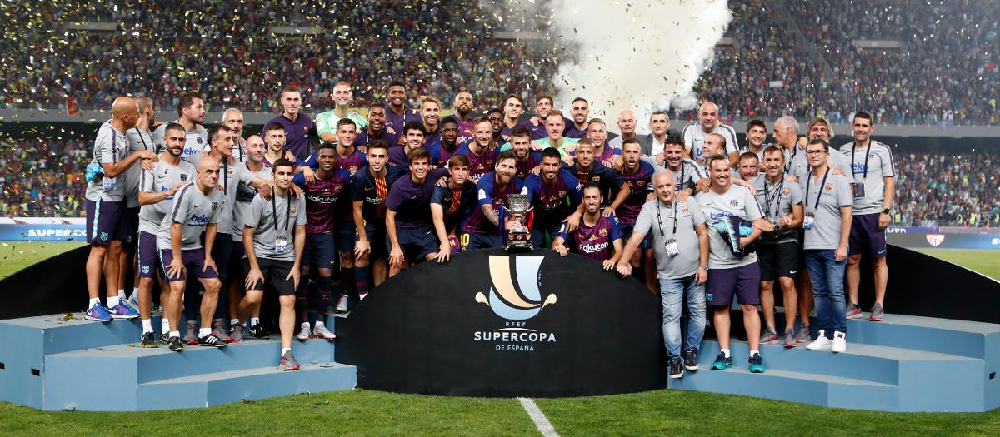
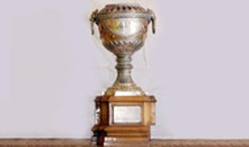
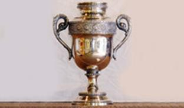
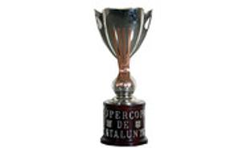
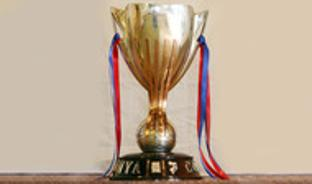
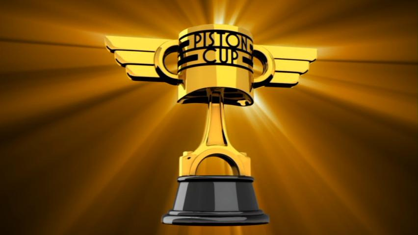

Honours
Very few clubs anywhere in the world have won so many titles. The club's greatest pride and joy remain the five European Cup titles won in Wembley (1992, 2011), Paris (2006), Rome (2009), Berlin (2015) the FIFA Club World Cup (2009, 2011 and 2015)

Champions League - 5
1991-92, 2005-06, 2008-09, 2010-11, 2014-15

FIFA Club World Cup - 3
2009-10, 2011-12, 2015-16

European Cup Winners' Cup - 4
1978-79, 1981-82, 1988-89, 1996-97

Fairs Cup - 3
11957-58, 1959-60, 1965-66 (won outright in 1971)

European Super Cup - 5
1992-93, 1997-98, 2009-10, 2011-12, 2015-16

Latin Cup - 2
1948-49, 1951-52

Pyrenees Cup - 4
1909-10, 1910-11, 1911-12, 1912-13

Spanish League Championship - 26
1928-29, 1944-45, 1947-48, 1948-49, 1951-52, 1952-53, 1958-59, 1959-60, 1973-74, 1984-85, 1990-91, 1991-92, 1992-93, 1993-94, 1997-98, 1998-99, 2004-05, 2005-06, 2008-09, 2009-10, 2010-11, 2012-13, 2014-15, 2015-16, 2017-18, 2018-19

Copa del Rey - 30
1909-10, 1911-12, 1912-13, 1919-20, 1921-22, 1924-25, 1925-26, 1927-28, 1941-42, 1950-51, 1951-52, 1952-53, 1956-57, 1958-59, 1962-63, 1967-68, 1970-71, 1977-78, 1980-81, 1982-83, 1987-88, 1989-90, 1996-97, 1997-98, 2008-09, 2011-12, 2014-15, 2015-16, 2016-17, 2017-18

Spanish Super Cup - 13
1983-84, 1991-92, 1992-93, 1994-95, 1996-97, 2005-06, 2006-07, 2009-10, 2010-11, 2011-12, 2013-14, 2016-17, 2018-19

Spanish League Cup - 2
1982-83, 1985-86
Mediterranean League
1937
Catalan League - 1
1937-38

Catalan League Championship - 23
1901-1902, 1902-03, 1904-05, 1908-09, 1909-10, 1910-11, 1912-13, 1915-16, 1918-19, 1919-20, 1920-21, 1921-22, 1923-24, 1924-25, 1925-26, 1926-27, 1927-28, 1929-30, 1930-31, 1931-32, 1934-35, 1935-36, 1937-38 (includes Copa Macaya (1901-02) and Copa Barcelona (1902-03)

Catalan Super Cup - 2
2014-15, 2017-18

Catalan Cup - 8
1990-91, 1992-93, 1999-00, 2003-04, 2004-05, 2006-07, 2012-13, 2013-14 (until 1993-94, Copa Generalitat)

Eva Duarte Cup - 3
1948-49, 1951-52, 1952-53
